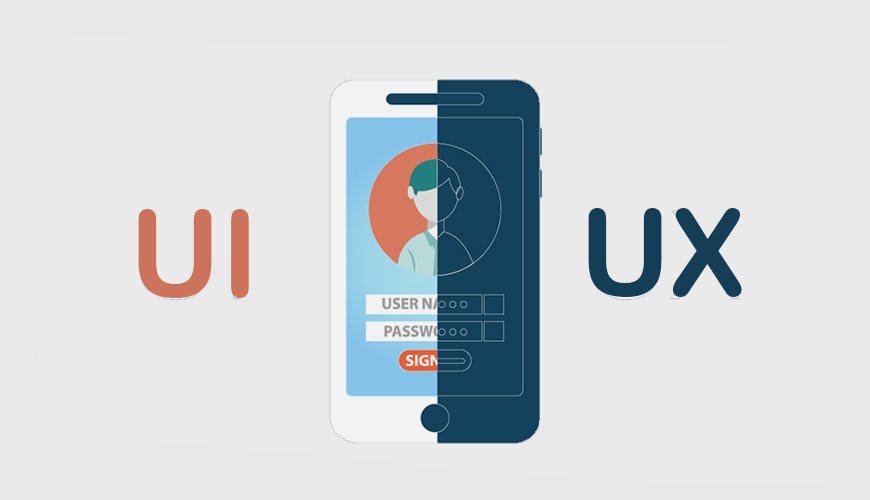

Welcome To Our Team Profile!
Team Profile of Group 27 Thursday
Yifan Shen

Hi, my name is Yifan Shen, Yvon is my English name. I am from Shanghai, an international metropolis located in the middle of the eastern coastline of China. Chinese is my native language. I have been in Melbourne for about three years. Throughout high school, because of my strong interest in IT, I have studied Applied Computing and Software Development. Computers have always given me a platform to demonstrate my creativity and increase my general knowledge. For my previous coursework, I designed a project plan which related to the COVID-19 drone monitoring in Applied Computing and made a program which I called it for "Filter Bubble" in Software Development. This gave me a great number of experiences in IT. In my spare time, I sometimes create some small programs, testing out new functions or combining old features which provides me a good opportunity to see my progress as a software developer. The major for further education that I pursue here in RMIT is Information Technology. In my leisure time, I have a great number of hobbies. Playing the piano can be one of them. Doing sports is also an integral part of my life. In my spare time, I love road-bike cycling. During the ride, I can not only relax my mind, exercise my body, but also enjoy the beautiful scenery along the way. I also enjoy playing tennis, basketball and badminton. Collecting things is also one of my favourite hobbies, ranging from sneakers, Pokémon cards, coins, stamps, etc. My most-liked thing to do on vocations is to travel. It is undoubtedly a fantastic thing to go and see where you want to go, photographing and discover the beauty of the earth. The place I most look forward to is Antarctica. For photography, for adventure, for icebergs, for wildlife, for another world…
Roy Loh

Greetings, my name is Roy Loh. I am a Malaysian Chinese international student studying information technology in RMIT university. I completed my WACE exams in 2020 but took a gap year due to Covid. I can speak English and mandarin. I enjoy watching videos on computer setups I cannot afford on the internet and anime in my free time. I work casually as a coffee barista at a hotel. As an international student in Melbourne, I find it quite challenging due to it being a new environment, however I am slowly getting used to the culture here. I dream to earn enough money so I can travel around the world. I aspire to work in the technology industry in the future and I hope to learn useful skills such as programming and broaden my knowledge regarding the world of tech.
Michael Khalil

Hello I'm Michael Khalil, I'm currently 18 years of age as of 2022 and just finished highschool last year completing VCE. As of this year I am currently enrolled at RMIT Melbourne studying my first year for my Bachelor of Information technology degree. I was born here in Australia but both sides of my family came from Egypt, with both my parents moving from Egypt to Melbourne as migrants. Because of my constant exposure to Egyptian culture and the Arabic language, I understand spoken Arabic vaguely (but cant read it!) and can barely speak it. Through primary and high school I also know basic Italian. My hobbies and interests include, Video Games, computer hardware, IT as a whole, japanese cars and modifying them, as well as motorsports in general (especially Formula 1!), and even a bit of anime.
Yao Lin

Hi, I am Yao Lin, I come from China. This is my second semester of Information Technology, very passionate about technology, and always curious about how technology works. I like to spend some time exploring various programming topics and new tech when I am free, other than that I love sports, my favourite sports are swimming and table tennis.
Jin Guo

Hello I’m Jin Guo, Andy is my English name. I'm currently 18 years old and just finished year 12 last year, and currently studying at Rmit Bachelor of IT. I was born and raised in tonga, an island located to the east side of Australia, close to New zealand. Tonga is a beautiful island surrounded with white beaches and coral reefs and covered with tropical rainforests. Although I was born in tonga, both my parents are chinese therefore I am from the nationality of China. The language that we speak at home is Mandarin no matter whether our family is in Tonga or Australia. My hobbies and interests are actually playing basketball and watching the nba, video games and sneakers.
Taha Elsukkari
I am Taha! I was born in Australia during late 2003. My parents on the other hand are both from Lebanon, a small country off the coast of the Mediterranean Sea. I can speak English and a fair amount of Arabic. For fun I mostly go out with my friends or play games for fun such as valorant or elden ring.I enjoy watching motorsports such as formula 1. I graduated from Minaret College in 2021, so I am currently in my first year of Bachelor of IT.
Group Processes
Our team's chemistry for assignment 2 was interesting to say the least, communication was not always there from everyone and many mishaps occurred, this could be due to it being our first time working together. Although, for Assignment 3, our team has improved dramatically, the work delegation was split very evenly and the quality of work from everyone has improved, overall, with the team members becoming more familiar with each other, our performance has increased and we have become closer.
Career plans
Based on the ideal jobs of the group, we can tell that some members of the group share similar career plans while others differ. Some group members like Taha, Yifan and Michael want a career in software development while others want a more front end job, like Andy who aspires to be a web developer, Ronny in front end development and Roy who wants to be a solutions architect. Roy. Ronny and Andy’s job involves more interaction with the end user compared to Taha, Yifan and Michael’s job which mostly focuses on getting things done behind the scenes. Roy’s ideal job requires shifting priorities, it also involves understanding business needs and communicating with stakeholders while using tools provided by cloud, having to focus on multiple things rather than one, thus differentiating it from other jobs. However out of all the back end development, Yifan is the only one interested in specifically IOS software development.
Project Description
Overview
Our project is a mobile application that is essentially a virtual wallet designed to be a unified hub for all forms of virtual cards, QR codes and virtual tickets. This idea can be innovative because there are many different types of services that can store credit cards (eg: apple pay and google play), and some less popular virtual cards and/or QR Codes used in other non wallet apps may use a different application or not even be available on a virtual wallet service, meaning a user might need multiple applications and multiple accounts to use all their virtual cards on their phone. This application will be designed so that all these cards and scannable codes and items can be stored in one place, as a unified “eWallet”, making a card holder’s life easier and more efficient when dealing with scannable items on their phone.
Motivation
This idea has come from personal experiences, with statistics and global trends making this idea more viable. When I make cashless payments, the majority of those transactions are made through Apple pay which I find to be much more convenient than taking out my physical wallet. The only time I need to regularly take out my wallet is when taking public transport to touch on and off my miki, which for me personally is a mild inconvenience when we already have these technologies in place in our phones through near field communication (NFC). Although a miki can be stored on mobile through google pay, the initial inconvenience still stands, having multiple wallet/card applications can be less efficient and convenient than a simple physical wallet! Especially when we are moving into a more digitised society. The solution is simple, people can have all their physical cards stored in one wallet, so all that is needed is one application to store everything, not multiple applications. This idea of convenience and practicality is the key motivation for my project. Data proves that this type of technology is becoming increasingly popular, with virtual wallets becoming increasingly more adopted. With 900 million transactions at the start of the pandemic increasing to almost 1.5 billion in 2021, a 25% increase, which is set to go above 33% in the coming years. The growth has been so large in fact that 45% of all eCommerce transactions were through mobile in 2021, which is twice as large as the payments done via debit cards and three times of debit card payments.
Landscape
There are many similar products like Apple pay and Google pay in the market, however our product differs from them with these two features:
Aims
Our concept is a smartphone application that functions as a virtual wallet, serving as a central location for all types of virtual cards, QR codes, and virtual tickets. As there are many different types of services that can store credit cards (e.g., apple pay and google play), and some less popular virtual cards and/or QR Codes used in other non wallet apps may require a different application or may not even be obtainable on a virtual wallet service, a user may need various applications and accounts to use any of their virtual cards on their phone. Our aim is to provide a functioning mobile application that integrates the use of near field communication (NFC) with Card / QR storage in order to essentially provide users with a unified “eWallet” making a card holder’s life easier and more efficient when dealing with scannable items on their phone, with the use of this application, our biggest target to achieve would be to create a functioning ewallet that allows for a convenient and straightforward experience for all users.
A goal that will assist us in achieving our aim would be for large institutions and banks to combine their cards with our application, this could mean that banking customers would no longer require physical cards but instead their bank cards would be immediately incorporated into our application, This is also true for any card producer such as ptv, arcades, universities, gyms etc. This feature, if achieved, could contribute greatly to adding more convenience for the users, thus allowing us to further our progression towards our aim.
Another goal that can help the team in achieving our aims is for system wide integration of our Application within a tech company with influence, such as Apple or Android. With the addition of our application with their operating systems, these companies can soar our teams efforts in broadening The user base of our application. With the introduction of an increase in users utilizing the ewallet, More user feedback can be received which will allow for more accurate changes to be made to better Suit the users needs and requirements, more features will be able to be added as well as user requests Would flood in. this will not only allow for a more widespread deployment of our app, But also allows for us to partner with those corporations and continue developing the software and hardware to allow for a greater user experience whilst using our app.
plans and Progress
Stage 1: Planning
During the planning stage, we have decided to use two different platforms. Android and iOS are structured differently from each other, therefore we decided to use two different tech stacks. Choosing our tech stacks for our mobile application is a crucial step for us. A good tech stack will help us reduce time, save cost in development, and open up opportunities for any future projects. We have decided to not use a hybrid stack, even though it will be more cost-efficient, we didn't want to give to give up functionality and UX. Therefore, we decided to separate our tech stacks, into Android and iOS. In our IOS tech stack, we have chosen Swift as our programming language over Objective-C, as it is the more preferred language over Objective-C. For our iOS development tools, we have chosen Xcode, an IDE powered by Apple which provides features needed to develop a native iOS app. for our UI framework (for user interface), we have decided on UIkit over SwiftUI, due to the fact that Swift UI only supports the later versions of iOS, locking out the older versions. In our Android tech stack, Kotlin was our choice as the programming language that will be used. Kotlin was chosen over the ever so popular Java due to it being more simple to use, which can enable projects to be delivered faster. For our Android development tools, we have chosen Android studio, the official development platform powered by Google. For out UI frameworks, Android provides a pre-built Android UI software, however we have chosen Jetpack Compose, due to it allowing a more simplified and accelerated development. Next, we had to estimate the costs for the mobile app development. Depending on app complexity, it can cost between $60,000 to $150,000 on simple app developments and more than $300,000 on more complex app developments. In Australia, programmers earn about $100 to $120 an hour, while other countries like India have an hourly rate of $30. Since we chose to launch on two platforms and use two different stacks instead of a higher stack, our costs will be relatively high. Therefore when choosing our team, we kept the costs in mind, while seeing whether the pros outweigh the cons. We decided to outsource to a development company overseas. Outsourcing is a good option as It has many benefits, such as being cost efficient while maintaining high quality. Foreign companies also adhere to guidelines and ensure that they stay throughout the project, unlike freelancers, and are much cheaper than putting together a team. Finally, we implemented some milestones and deadlines, to ensure that the app will be developed within the given time. We are targeting the app development to be completed in 3 months from now, so we can proceed to other stages such as testing, deployment and eventually the marketing of the app itself.
Stage 2: Design and Development
To create a better understanding of our user’s needs, we created a persona, along with a context
scenario and key scenarios.
Creating a persona: Jonathan Jonas
Background:
Stage 3: Development
The development of the software solution can be split up into two sections. The front end of the application, such as the layout and user interface of the application. And the back end of the application, such as all the functions that make the application work, usually things that cannot be seen by the user. Front end The front end of our application needs to be simple and easy to use, so that users can not waste any time accessing what they need. Our application would be counterintuitive if it would take multiple keystrokes and user inputs to access a card and other items of relevance. Because of this, as soon as the application is opened the first thing the user should see are the cards they have so they can make a transaction quickly after opening the app, and also below these cards will be the scannable items such as qr codes and barcodes so that they also can be accessed quickly on the same page. Other external options not relevant for day to day use should be hidden away for less clutter through a burger box menu. Such as adding other
Stage 4: Testing
The testing process will be conducted through user testing where we invite random people to test our application, the hiring process will be done through social media and we will provide monetary reward for the test of our application. Not only that, we will also be hiring a quality assurance team first to provide a more professional and thorough test for the application, this ensures that the test is done to perfection and that they are to discover any bugs that a normal user wouldn’t find in their day to day usage of our application. The quality assurance team will make sure that the application:
Stage 5: Deployment
After the minimum viable product passes the testing stage, we decided to deploy the app onto both Google play store and the App store, uploading on different platforms have different requirements, such as Google Play requiring promotional material for the application. Promotional materials include pictures and videos. Next, we have to implement configuration options and provide privacy policies. After that, we have to implement access rights and pricing. Finally, we have to continuously configure and publish the app to be stable. For iOS, the App store starts with us filling in information about the app on a provided form, including the name, page, icon, description, privacy policy and key words of the product. With the AppStore, we submit the application build via Xcode. Apple’s employees will test our products to ensure it can be made live on their platform. After that, we focus on the code after launching the MVP, and focus on other business aspects such as looking for investors and marketing our application.
Stage 6: Final Stage
After launching our minimum viable product as beta, we will receive feedback from users based on their experiences. From the user’s feedback, we can observe what the users are fond of and what issues they faced when using the app. From this we can improve the application by removing unnecessary features or bugs, while adding more viable features.After our minimum viable product has succeeded in gaining attention, we will need to focus on full scale marketing, to ensure our product reaches users out there. This is where our marketing team will market our products to reach users on both iOS and Android platforms, by social media advertisements on Facebook, YouTube and Instagram, as millions of users interact on these platforms every day.
Roles
Frontend developers (Andy) The project manager will be Michael because it was obviously his project idea. The front end developer will be Roy, Ronny and Andy where we are incharge of the UI and UX interface of our application. Roy, ronny and I, despite the interest and skills in various areas of a front end developer, we all should have the skills to create an interface for the suitability of our app. Although my ideal job is to be a website developer, and seems irrelevant to our mobile app development, to become a website developer, user studies and user testing is a skill that a website developer should have, therefore I can use that knowledge to assist with the UI/UX development of our app. For Roy, his responsibility is to keep and maintain the running of our app, he is incharge of the data and users personal details stored in the cloud are secure and up to date when users change their information. And finally, Ronny is the actual developer of the UI/UX of the application as his ideal job is to become a frontend developer and he is passionate about UI/UX development. The Skills that Ronny currently has are basic HTML, CSS, Javascript, React, Git, which is a good start for an application developer if he chooses to go down that path. The roles of each person of the frontend developer will be kept stagnant from week to week, as we are incharge of very different components of the design and maintenance of our application.
Backend Developers (Ronny) in our team are required know at least two programming languge, because our project are expected to run in two operating system which is android and apple, more than that, they are need to know SQL for operating the database that be used to store personal infomation of users. But Backend developers in our team should know more than just coding, communicating the UI/UX designers and frontend developers is essential, due to lacking programming knowledge for designers, it would be easy for them to ignore the complexity of creating elements in the backend. In the real world, there are many limitations for developers to follow the prototype designers give, the reason might be the compatibility of operating system, the size of screen of targeted Audience,so backend developers need to communicate in the team and give advice on the design as well.
Scope and limits
There are certain constraints that can limit the app development and success of the app:
Economic constraints
Time constraints
Technological constraints

Moral and legal constraints
Privacy Act 1988
Information Privacy Principles (IPPs)
Tools and technology
Apple software:

Swift
Swift is a modern intuitive programming language for iOS, which is designed safely and produces software that runs quickly. Swift is based on the latest research on programming languages, with decades of combined experience of Apple platform development. Named parameters are expressed cleanly in a syntax that enables APIs in Swift to more easily be read and maintained. Programmers using Swift do not need to input semicolons, inferred typing makes code more presentable and less error prone while headers are eliminated by modules and namespaces are provided. Strings use a UTF-8 based encoding for performance optimization for a wide-variety of use cases , and are Unicode-correct to best support international languages and emoji. Tight-deterministic referencing counting is used to manage memory, keeping memory usage to a minimum without collection of garbage.
Xcode
Xcode 13 consists of powerful new team development features which allow collaboration with Xcode Cloud, Github and Bitbucket. Features include initiating, reviewing, commenting within the code, merging pull requests directly within Xcode and comparing different versions of code files.
UIkit
A UI kit is a collection of assets containing design elements such as UI components and styles, examples of UI components include navigation menus, widgets and input forms. UI components are elements that provide functionality and convey meanings to the users. UI kits typically consist of mock-ups for a solution in a particular field. UI kits can improve design workflow by:
Android software:
Kotlin
Kotlin is a programming language developed by Jetbrains, it provides interoperability with Java, which means existing skills and knowledge from Java can be used, enabling Kotlin to be used for development of Android application projects. The key features of Kotlin include:
Android Studio
Android Studio is the official IDE, built for Android for development acceleration and aid in building of high quality Android applications. Some features include:
Jetpack compose
Jetpack Compose is Android’s modern toolkit used to build native UI. t accelerates and simplifies UI development on Android. Some benefits of using Jetpack Compose include:
Hardware
IOS Device Requirements: To use eWallet Pay for purchases in stores in Australia, you need an iPhone 8 or later, or an Apple Watch Series 3 or later.
ANDROID Device Requirements:To use eWallet Pay for purchases in stores in Australia, you need an Galaxy s6 Active or later, or a Gear S2 Sport or later.
Testing
Testings will be conducted on various elements that includes the phone compatibility, security vulnerabilities and application instabilities. First and foremost, Our application will mainly run for phone users to enhance the conveniences of payments and collect points for rewards. We will test our application on a variety of phones including (ios, and android), as our project is conducted around the convenience of mobile phone usage, to know that this is successful is that the application runs on all androids and ios phones that are compatible. Because we are dealing with clients and users sensitive data we have to ensure the security of their data and credit card details. This would be a high priority of the testing as leaking consumer data is wrong, unprofessional and laws can be taken into the situation. To ensure the success of this, we will incorporate malware and spyware detections and remove any threats that are a threat to consumers data and privacy. The feature to hide the credit card or reward number to protect consumers privacy when they are in a place where there are other people or in situations where they lose their phone. Finally, we will test the stability of our application to determine if it crashes, lags, or does not work in the way we want it to. To test this we will run our prototype or the actual application to see whether it's running smoothly or need fixing up. The way we will test our application is through user testing, where we will invite random people in all fields such as age and tech experts and non tech people to use our application. We will at least have 1000 people to test our application so that we can get broader and accurate feedback. Despite that, We will also hire a quality assurance team for more professional testing. Where they are trained to go through thorough testing that users might not experience in their day to day use of our application. This is done first before we actually get random people to test our application to ensure that their user experience in the testing stage is smooth.
Risks
Sources: 1
Security

- Unsafe and Defective Networking
- Unreliable data storage
UX/UI integration
- Poor UX/UI integration
- Developing an invaluable app for users
- Stuffing several functions in a single application
Cost
- Designing an App for Many Platforms at the same time
Skills and Jobs
Android developer
Androids developers are software developers that build application running on android operational system, They are required to be familiar with one of main programming languages Kotlin or Java. Kotlin is relatively new compared to Java, but it is getting more ore and more popular these days, due to it is more efficient while compiling it into the binary code, which makes it has better performance than java. However java is still the most popualr option among the developers, Android develoepr also have to know sqlite as well, they need to gather user infomation and store this data into database at some point, and sqlite is the language to achive that on android operating system. other than these technical skill, good developers also need to quipped quillities:
Apple developer
An iOS developer is responsible for creating apps for Apple's iOS operating system-based mobile devices. A professional iOS developer should be familiar with one of the platform's two programming languages: Objective-C or Swift. They should also be well-versed in the patterns and practises that revolve around the iOS platform. The responsibilities that and iOS developer have are:
UX designer
A small team of UX Designers will be brought on board to assess and produce a better product Which is more enjoyable for the end user. This is achieved through:
Software/penetration tester
A team of quality assurance team will be hired to inspect and test the applications in the beta version of the application. A team of more than 2 will be hired to inspect the areas of:
Group reflection